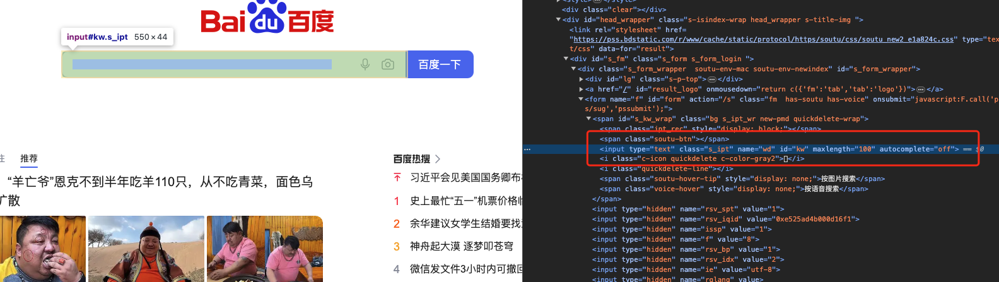

playwright
playwright
1 | Playwright 是一个用于自动化浏览器操作的开源工具，由 Microsoft 开发和维护。它支持多种浏览器（包括 Chromium、Firefox 和 WebKit）和多种编程语言（如 Python、JavaScript 和 C#），可以用于测试、爬虫、自动化任务等场景。 |
与 Selenium 和 pyppeteer 相比，Playwright 具有以下几个区别和优势：
1 | 1. 多浏览器支持：支持所有主流浏览器。这使得开发人员可以根据需求选择最适合的浏览器进行自动化操作。（Playwright不支持旧版Microsoft Edge或IE11） |
爬虫中使用 Playwright 的好处:
1 | 1. 动态网页爬取：Playwright 可以模拟用户在浏览器中的操作，包括渲染 JavaScript、点击按钮、填写表单等，从而可以爬取包含动态内容的网页。 |
python版本的Playwright官网文档：https://playwright.dev/python/docs/intro
环境安装
系统要求：
- Python 3.8 或更高版本。
- Windows 10+、Windows Server 2016+ 或适用于 Linux 的 Windows 子系统 （WSL）。
- MacOS 12 Monterey 或 MacOS 13 Ventura。
- Debian 11、Debian 12、Ubuntu 20.04 或 Ubuntu 22.04。
安装playwright的python版本
- pip install playwright
安装Playwright所需的所有工具插件和所支持的浏览器
- playwright install
- 该步骤耗时较长
屏幕录制
1 | playwright提供一种高级功能，就是可以将我们的操作录制下来，生成代码，方便我们后续使用。有一定的局限性，了解即可。 |
录制流程
1.在pycharm中创建工作文件，起名为playwright.py。
2.进入终端，进入playwright.py所在文件目录。
3.执行命令： playwright codegen -o playwright.py 。
4.此时会自动弹出浏览器页面，点击录制按钮，开始录制。
5.在浏览器中输入网址，完成需要录制的步骤过程，点击停止录制按钮，完成录制。
6.完成录制后，自动生成的代码会写入playwright.py文件中 。
录制命令
将屏幕录制生成的代码保存到playwright文件中
1 | playwright codegen -o playwright.py |
模拟手机设备进行网络请求（只支持手机模拟器，无需单独安装）
1 | playwright codegen --device="iPhone 13" -o playwright.py |
支持设备列表
1 | "Blackberry PlayBook", "Blackberry PlayBook landscape", "BlackBerry Z30", "BlackBerry Z30 landscape", "Galaxy Note 3", "Galaxy Note 3 landscape", "Galaxy Note II", "Galaxy Note II landscape", "Galaxy S III", "Galaxy S III landscape", "Galaxy S5", "Galaxy S5 landscape", "Galaxy S8", "Galaxy S8 landscape", "Galaxy S9+", "Galaxy S9+ landscape", "Galaxy Tab S4", "Galaxy Tab S4 landscape", "iPad (gen 5)", "iPad (gen 5) landscape", "iPad (gen 6)", "iPad (gen 6) landscape", "iPad (gen 7)", "iPad (gen 7) landscape", "iPad Mini", "iPad Mini landscape", "iPad Pro 11", "iPad Pro 11 landscape", "iPhone 6", "iPhone 6 landscape", "iPhone 6 Plus", "iPhone 6 Plus landscape", "iPhone 7", "iPhone 7 landscape", "iPhone 7 Plus", "iPhone 7 Plus landscape", "iPhone 8", "iPhone 8 landscape", "iPhone 8 Plus", "iPhone 8 Plus landscape", "iPhone SE", "iPhone SE landscape", "iPhone X", "iPhone X landscape", "iPhone XR", "iPhone XR landscape", "iPhone 11", "iPhone 11 landscape", "iPhone 11 Pro", "iPhone 11 Pro landscape", "iPhone 11 Pro Max", "iPhone 11 Pro Max landscape", "iPhone 12", "iPhone 12 landscape", "iPhone 12 Pro", "iPhone 12 Pro landscape", "iPhone 12 Pro Max", "iPhone 12 Pro Max landscape", "iPhone 12 Mini", "iPhone 12 Mini landscape", "iPhone 13", "iPhone 13 landscape", "iPhone 13 Pro", "iPhone 13 Pro landscape", "iPhone 13 Pro Max", "iPhone 13 Pro Max landscape", "iPhone 13 Mini", "iPhone 13 Mini landscape", "iPhone 14", "iPhone 14 landscape", "iPhone 14 Plus", "iPhone 14 Plus landscape", "iPhone 14 Pro", "iPhone 14 Pro landscape", "iPhone 14 Pro Max", "iPhone 14 Pro Max landscape", "Kindle Fire HDX", "Kindle Fire HDX landscape", "LG Optimus L70", "LG Optimus L70 landscape", "Microsoft Lumia 550", "Microsoft Lumia 550 landscape", "Microsoft Lumia 950", "Microsoft Lumia 950 landscape", "Nexus 10", "Nexus 10 landscape", "Nexus 4", "Nexus 4 landscape", "Nexus 5", "Nexus 5 landscape", "Nexus 5X", "Nexus 5X landscape", "Nexus 6", "Nexus 6 landscape", "Nexus 6P", "Nexus 6P landscape", "Nexus 7", "Nexus 7 landscape", "Nokia Lumia 520", "Nokia Lumia 520 landscape", "Nokia N9", "Nokia N9 landscape", "Pixel 2", "Pixel 2 landscape", "Pixel 2 XL", "Pixel 2 XL landscape", "Pixel 3", "Pixel 3 landscape", "Pixel 4", "Pixel 4 landscape", "Pixel 4a (5G)", "Pixel 4a (5G) landscape", "Pixel 5", "Pixel 5 landscape", "Pixel 7", "Pixel 7 landscape", "Moto G4", "Moto G4 landscape" |
访问指定网址，并且设置浏览器窗口大小
1 | playwright codegen --viewport-size=800,600 www.baidu.com -o 指定文件.py |
保留cookie信息
1 | 有些网站需要登录后才能访问，可以通过--save-storage=auth.json和--load-storage=auth.json来保存和加载cookie信息，实现自动登录。 |
执行命令–save-storage=auth.json 在屏幕录制时，进行登录操作，保存登录后的cookie信息到auth.json文件中。
1 | playwright codegen --save-storage=auth.json http://download.java1234.com/ |
执行命令–load-storage=auth.json 加载auth.json文件中的cookie信息，实现自动登录，进入登录成功的页面。
1 | playwright codegen --load-storage=auth.json http://download.java1234.com/ -o playwright.py |
第一个playwright程序
1 |
|
定位元素
1 | * playwright是模拟用户点击操作，所以需要定位元素，才能进行点击操作。通过css样式和xpath两种方式来定位元素。获取到元素后可以对元素进行各种操作。如：点击，输入文本，滑动，获取文本等。 |
CSS定位
1 | * 通过css样式来定位元素，css样式是页面上元素的唯一标识，通过css样式可以唯一定位页面上的元素。可以使用标签、id、层级和class选择器多种方式来定位元素。 |
标签
1 | page.locator('input#kw') |
id
1 | page.locator('#kw') |
class选择器
1 | page.locator('.s_ipt') |
层级
1 | page.locator('form > span > input') |
css定位示例

1 | # css定位 |
xpath定位
1 | page.locator('//*[@id="nav-searchform"]/div[1]/input') |
xpath定位示例
1 | # xpath定位 |
根据文本定位
1 | 通过调用get_by_text函数，可以定位页面上文本为“指定内容”的元素。 |
文本定位示例
1 | # 通过文本查询元素 |
iframe定位
1 | iframe 简单来说就是一个 html 嵌套了另外一个 html。在页面元素上最简单的识别方法，就是看你需要定位的元素外层有没有iframe的标签名称。 |
page.frames
1 | 获取page页面有多少个frames。 |
page.main_frame
1 | 获取当前页面的主frame。 |
page.main_frame.child_Frames
1 | 获取当前页面的主frame所有子frame。 |
page.frame(name,url)
1 | iframe有两个重要的属性，name和url。如果属性不存在，输出为空。 |
frame示例
1 | def login(): |
其他操作
locator.all()
1 | 该方法用于获取所有匹配特定定位器条件的元素。它返回一个元素列表，你可以对列表中的每个元素执行操作。 |
locator.count()
1 | 该方法返回匹配特定定位器条件的元素数量。 |
locator.nth(index)
1 | 该方法用于获取匹配特定定位器条件的元素列表中的第 index 个元素。索引从零开始。 |
inner_text()
1 | 获取标签中的文本内容。 |
get_attribute(attrName)
1 | 获取标签指定属性的值。 |
其他操作示例
1 | # 其他函数示例 |
page 常用函数
goto(url, options)
1 | 导航到指定的 URL。可以通过传递选项参数来配置导航行为，例如设置超时时间等。 |
bring_to_front()
1 | 停留在当前页面。 |
reload(options)
1 | 重新加载当前页面。同样可以通过选项参数配置重新加载行为。 |
close(options)
1 | 关闭当前页面。 |
locator(options)
1 | 通过指定规则定位元素。 |
title()
1 | 获取当前页面的标题。 |
content()
1 | 获取当前页面的页面内容数据。 |
url()
1 | 获取当前页面的 URL。 |
click(selector, options)
1 | 点击匹配给定选择器的元素。 |
fill(selector, value, options)
1 | 在匹配给定选择器的表单元素中填入指定的值。 |
go_forward()
1 | 进入下一页（之前访问过的）。 |
go_back()
1 | 返回到上一页。 |
screenshot(options)
1 | 对当前页面进行截图。 |
evaluate(pageFunction, …args)
1 | 在页面上下文中执行 JavaScript 函数，并返回结果。 |
page.mouse.click(x, y, options)
1 | 模拟在指定坐标位置点击鼠标左键。 |
page.mouse.dblclick(x, y, options)
1 | 模拟在指定坐标位置双击鼠标左键。 |
page.mouse.move（x,y）
1 | 鼠标操作 移动到指定坐标 |
page.mouse.down()
1 | 鼠标操作 按下鼠标 |
page.mouse.up()
1 | 鼠标操作 释放鼠标 |
page.mouse.wheel(deltaX, deltaY)
1 | 鼠标操作 模拟滚动鼠标滚轮。 |
page.keyboard.type(text, options)
1 | 键盘操作 模拟键盘输入指定的文本。可以通过 options 参数设置输入的延迟时间控制每个字符输入后等待时长。 page.keyboard.type(text,delay=1000); |
page.keyboard.press(key, options)
1 | 键盘操作 模拟按下指定的按键。可以通过 options 参数来设置按键的修饰键，比如 Ctrl、Alt、Shift 等。page.keyboard.press('Enter'); |
page.keyboard.down(key)
1 | 键盘操作 模拟按下指定的按键，但不释放。page.keyboard.down('Shift'); |
page.keyboard.up(key)
1 | 键盘操作 释放之前按下的指定按键。page.keyboard.up('Shift'); |
page.keyboard.insertText(text)
1 | 键盘操作 在焦点元素中插入指定的文本。与 type 方法类似，但不考虑焦点元素。page.keyboard.insertText('Hello, world!'); |
tag常用函数
textContent()
1 | 获取元素内部的文本内容。 |
getAttribute(name)
1 | 获取元素的指定属性值。 |
click(options)
1 | 模拟点击元素。 |
hover(options)
1 | 将鼠标悬停在元素上。 |
scrollIntoViewIfNeeded(options)
1 | 将元素滚动到可见区域。 |
isIntersectingViewport()
1 | 检查元素是否与视口相交（即是否在可见区域）。 |
isVisible()
1 | 检查元素是否可见。 |
type(text, options)
1 | 在元素上输入指定的文本。 |
selectOption(values, options)
1 | 选择下拉菜单中的指定选项。 |
focus(options)
1 | 将焦点设置到元素上。 |
isEnabled()
1 | 检查元素是否可用（未禁用）。 |
isChecked()
1 | 检查复选框或单选框是否被选中。 |
context
1 | 浏览器的上下文管理对象Context可以用于管理Context打开/创建的多个page页面。并且可以创建多个Context对象，那么不同的Context对象打开/创建的page之间是相互隔离的（每个Context上下文都有自己的Cookie、浏览器存储和浏览历史记录）。 |
context作用
多个用户会话模拟
1 | 你可以在同一浏览器中创建多个上下文，每个上下文代表一个用户会话，从而实现并行测试或模拟多用户场景。 |
Cookie 管理
1 | 每个上下文都有自己的 Cookie 存储，你可以在不同的上下文中管理和使用 Cookie，例如模拟用户登录状态或进行不同用户之间的数据交互。 |
隔离页面集合
1 | 每个上下文都有自己的页面集合，页面之间相互隔离，可以独立进行操作和测试，提高测试效率和可靠性。 |
context常用函数
newContext([options])
1 | 创建一个新的上下文。可以通过选项参数配置上下文的行为，例如设置用户代理、浏览器视口大小等。 |
browserContexts()
1 | 获取当前浏览器实例中的所有上下文列表。 |
newPage([options])
1 | 在当前上下文中创建一个新页面。 |
close()
1 | 关闭当前上下文。关闭上下文将关闭其所有页面并清除相关资源。 |
addCookies(cookies)
1 | 向当前上下文添加 Cookie。 |
clearCookies()
1 | 清除当前上下文中的所有 Cookie。 |
storageState([options])
1 | 获取当前上下文的存储状态，包括 Cookie、LocalStorage、SessionStorage 等。 |
context示例
1 | def context_demo(): |
规避检测
1 | 如果网站有对Playwright采取监测机制的话，比如正常情况下我们用浏览器访问淘宝等网站的 window.navigator.webdriver的值为 undefined或者为false。而使用Playwright访问则该值为true。可以通过js注入的方式解决该问题。 |
查看taobao是否检测Playwright
1 | def taobao(): |
js注入，绕过淘宝检测
1 | def taobao2(): |
浏览器接管
1 | 通常情况下，我们使用playwright |
操作步骤
任意目录下新建一个，空白文件夹，用于保存接管的浏览器的运行数据。
找到浏览器安装的完整路径。（可执行文件）
1 | /Applications/Google Chrome.app/Contents/MacOS/Google Chrome |
打开终端，进入浏览器可执行程序目录，输入命令启动浏览器。(可执行程序有空格，需要\进行转义)
1 | cd /Applications/Google Chrome.app/Contents/MacOS |
编写代码实现托管
1 | def localBro(): |
示例
搜索关键字
示例一 360搜索关键字 第二十条
1 | # 360搜索关键字 第二十条 |
示例二 360搜索关键字 第二十条 模拟认为操作
1 | # 360搜索关键字 第二十条 模拟认为操作 |
示例三 page页面常用函数
1 | #page页面常用函数 |
示例四 模拟京东登录操作，滑动解锁
1 | import cv2 |